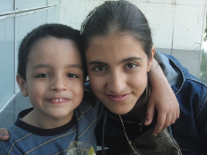

|
|
دادگاه نسرین ستوده برگزار نشد
دو شنبه1 خرداد 1391
تا قانون خانواده برابر: دادگاه نسرین ستوده، وکیل دادگستری، فعال حقوق زنان و حقوق بشر به دلیل عدم انتقال وی به محل دادگاه، برگزار نشد.
بنا به احضاریه ابلاغ شده در زندان به ستوده، باید امروز یکشنبه ۳۱ اردیبهشت ساعت ۱۱ صبح در شعبه ی یک دادگاه انتظامی وکلا واقع در ساختمان کانون وکلای دادگستری حضور می یافت. این دادگاه در ادامه ی محاکمه ای بود که از حدود یک سال پیش بنا به درخواست مرجع قضایی مبنی بر تعلیق پروانه وکالت ستوده آغاز شد که به دلیل عدم حضور وی برگزار نشد.

در این رابطه، فرزندان، همسر و خانواده ستوده به همراه برخی از وکلا و فعالان حقوق زنان برای دیدار با نسرین ستوده در کانون حضور یافتند، اما موفق به دیدار وی نشدند.
سال گذشته در جریان اولین جلسه رسیدگی به این پرونده نسرین ستوده با دستان دستنبد زده به کانون منتقل شد. روحیه بالای او برای مدت ها سوژه خبری رسانه های فارسی زبان و غیر فارسی زبان دنیا بود.